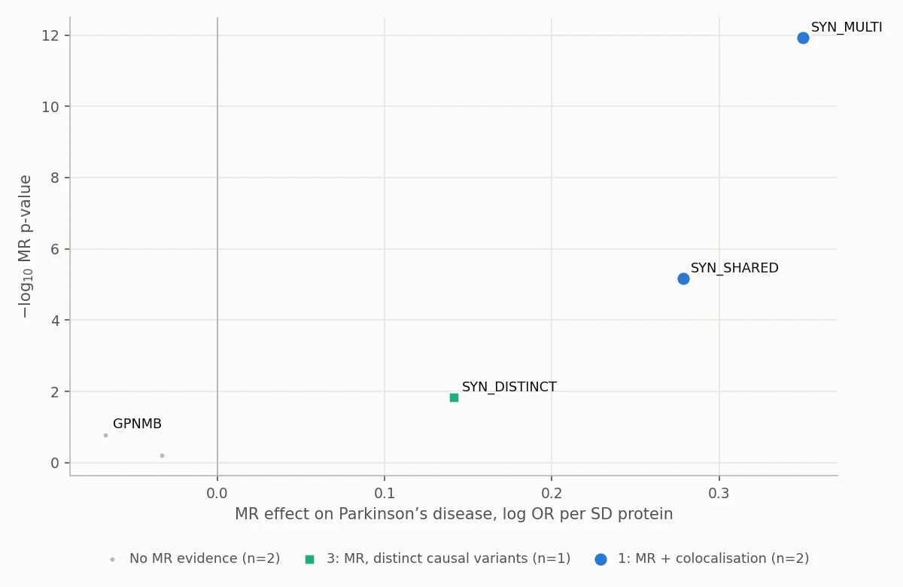

Human genetics · Target discovery · Nextflow
Proteome-wide cis-MR and colocalisation scan for Parkinson’s disease
A Nextflow pipeline built to test every plasma protein in the UK Biobank Pharma Proteomics Project (~2,900 Olink proteins) as a potential cause of Parkinson’s disease. For each protein it uses variants near the protein’s own gene as instruments, estimates the causal effect with Mendelian randomisation, tests with colocalisation whether protein and disease share a causal variant, then ranks everything into evidence tiers.
Scope. Results on this page come from the pipeline’s validation profile: four simulated proteins plus the real GPNMB locus. The full UKB-PPP panel has not been run, so no proteome-wide hits are reported here.

From one protein to thousands
My dissertation assessed a single protein, GPNMB. Human-genetics teams in drug discovery run the same logic across thousands of proteins at once. This project turns that analysis into a scalable target-prioritisation workflow: which plasma proteins have genetic evidence of a causal role in Parkinson’s disease, and how strong is it?
What runs for every protein
- cis window. Gene ± 500 kb on GRCh38, with INFO and MAF QC.
- Harmonisation. Alleles aligned on GRCh37 position between pQTL and GWAS, handling strand flips and palindromic SNPs.
- Instruments. p < 5×10−8, F ≥ 10, LD-clumped at r² < 0.001 on 1000 Genomes EUR.
- MR. Wald ratio or IVW (fixed and random effects), MR-Egger and weighted median.
- Colocalisation. Approximate Bayes factor coloc (p1 = p2 = 10−4, p12 = 10−5) with prior sensitivity.
- Across proteins. Benjamini–Hochberg FDR → evidence tiers → HTML report.
UKB-PPP summary statistics run to well over a terabyte. A streaming fetch script downloads one protein at a time, keeps only its cis window and deletes the rest before moving on, so disk use stays at one protein’s worth of raw data.
| Tier | Rule | Meaning |
|---|---|---|
| 1 | MR q < 0.05 and PP.H4 ≥ 0.8 | Protein and PD most likely share one causal variant |
| 2 | MR q < 0.05 and PP.H4 0.5–0.8 | Supportive, not conclusive |
| 3 | MR q < 0.05 and PP.H3 ≥ 0.5 | Different causal variants: MR probably reflects LD |
| 4 | MR q < 0.05, coloc inconclusive | Usually an underpowered outcome signal |
Checked against R, then against known answers
The statistics are implemented in Python and checked against the reference R packages. The test suite reproduces my dissertation’s R results to at least eight significant figures.
| Check | R (dissertation) | This pipeline |
|---|---|---|
| coloc.abf, SomaScan GPNMB vs PD (150 SNPs) | PP.H4 = 0.943955 | PP.H4 = 0.943955 |
| coloc.abf, UKB-PPP Olink GPNMB vs PD (4,018 SNPs) | PP.H3 = 0.999804 | PP.H3 = 0.999804 |
| IVW fixed + random effects, Cochran’s Q (strict, standard and liberal clumping) | e.g. OR 1.079, RE p = 0.473 | identical |
| Wald ratio, lead variant rs75801644 | β = −0.06717, SE 0.04832 | identical |
The test profile combines the real GPNMB locus with four proteins simulated from a genotype panel, so LD, clumping and colocalisation behave realistically. Each lands where it should.
| Protein | Scenario | Result |
|---|---|---|
| SYN_SHARED | One causal pQTL that also drives PD | Tier 1 (OR 1.32, PP.H4 0.99) |
| SYN_MULTI | Three causal pQTLs, all mediated by the protein | Tier 1, 3 instruments (OR 1.42, PP.H4 1.00) |
| SYN_DISTINCT | PD signal from a nearby variant in LD | Tier 3 (MR p = 0.014, PP.H3 1.00) |
| SYN_NULL | pQTL with no effect on PD | No MR evidence (PP.H1 0.99) |
| GPNMB (real) | UKB-PPP Olink vs ieu-b-7 | No MR evidence at the lead variant; flagged for multi-signal follow-up |
Why GPNMB is flagged, not discarded
The strongest Olink pQTL for GPNMB is a low-frequency variant (rs75801644) with no PD association, so lead-variant MR is null and single-variant colocalisation strongly prefers distinct signals (PP.H3 = 0.9998). But the pQTL has several independent signals and PD’s peak lies over them, and SuSiE-based colocalisation of the same Olink data, with a 1000 Genomes LD matrix, found a secondary pQTL signal (lead variant rs199347) shared with PD (PP.H4 = 0.99 under the default prior, 0.51 at p12 = 10−7). A naive filter would throw GPNMB away; the pipeline flags loci like this for multi-signal follow-up instead.

What the scan can’t tell you
- Single-variant colocalisation assumes one causal variant per trait. Multi-signal loci need SuSiE-based colocalisation with an LD matrix, which the pipeline does not do yet.
- cis-MR assumes instruments act on PD only through the protein. Protein-altering variants can change Olink antibody binding without changing protein level.
- Results are genetic prioritisation evidence, not proof of causality or druggability.